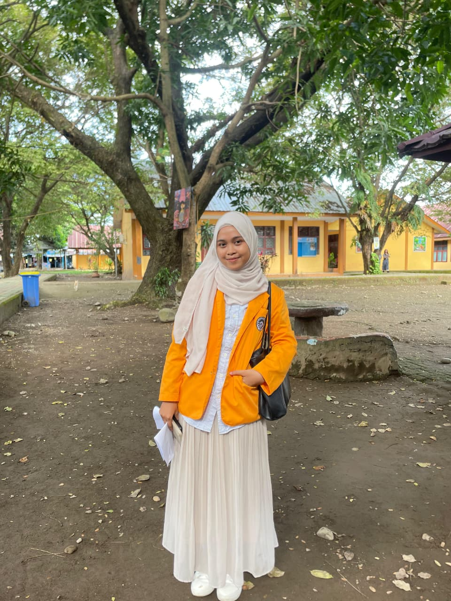

Nama: Andi Nurrizqah Hamdana
NIM : 240209501084
Kelas: PTIK F
Alamat: Jl. Mallengkeri Raya, Desa Pakkasalo Kec.Sibulue Kab.Bone
Asal Sekolah : MAN 1 BONE
Motto :
"Apa yang kuusahakan hari ini, itu yang akan aku tuai nantinya"
Pengalaman
Sebuah pengalaman yang tak pernah terduga bisa berkuliah di jurusan sekarang ini dan mendapat kelas di PTIK F. Di semester awal saya merasa kesulitan untuk adaptasi dengan lingkungan dan matkul yang dipelajari. Kesulitan ini ada, mungkin salah satu alasannya karena background saya yang merupakan alumni Madrasah. Dan memang tidak ada planning untuk ambil jurusan ini. Tapi setelah menjalani semester satu dibersamai oleh teman-teman yang saling suport dan akhirnya saya bisa survive di dunia perkuliahan.
Semester dua pun datang dengan berbagai tugasnya tetapi masih lebih ringan dibanding semester satu. Selama berkuliah di dua semester lalu terasa sangat singkat, mungkin rotasi bulan yang berputar begitu cepat yang menyebabkan perputaran jarumnya tak terasa. Oh iya, selama semester satu anak-anak PTIK berkuliah secara daring dikarenakan ruang belajar yang tidak ada. Tapi memasuki semester dua perkualihan mulai dilaksankan secara offline dan lokasinya di Lamacca. Vibes perkualihan lebih terasa selama offline karena bisa lebih banyak interaksi dengan teman-teman. Semoga semester tiga ini bisa terjalani dengan baik dan tuntas. SEMANGAT KULIAH!!!
Daftar Mata Kuliah
Daftar Dosen

| No | Nama | Jenis Kelamin | Alamat | Asal Sekolah | |
|---|---|---|---|---|---|
| Lengkap | Panggilan | 1 | Sinta Aulia | Sinta | Perempuan | Jl.Andi Djemma | SMA 7 Sinjai | 2 | Fransisca Gabriela | Ela | Perempuan | Tidung | SMA 9 Makassar | 3 | Athiya Najwa | Tiya | Perempuan | Jl.Malengkeri | SMA 3 Enrekang | 4 | Nurhandayani | Nanda | Perempuan | Jl.Manuruki | SMK Takalar |